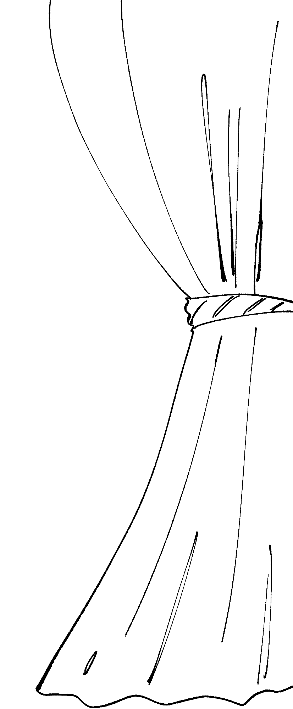
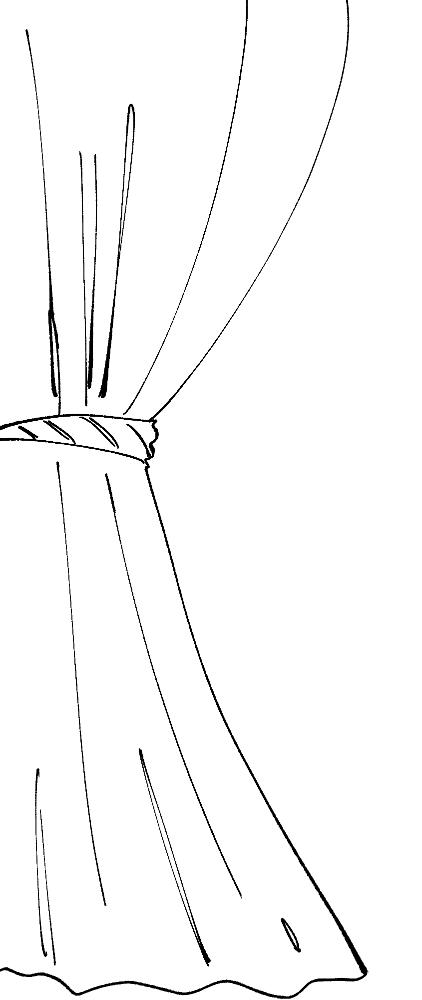
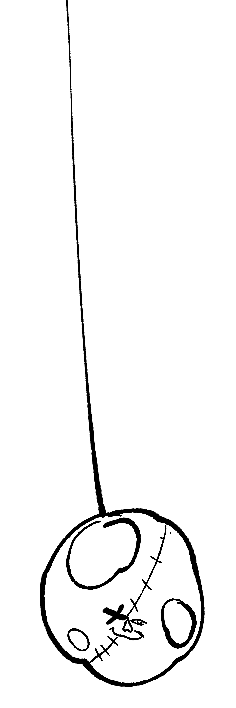
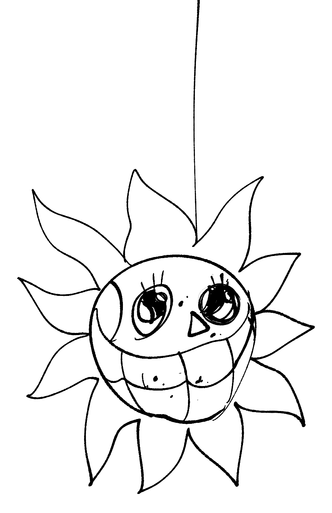
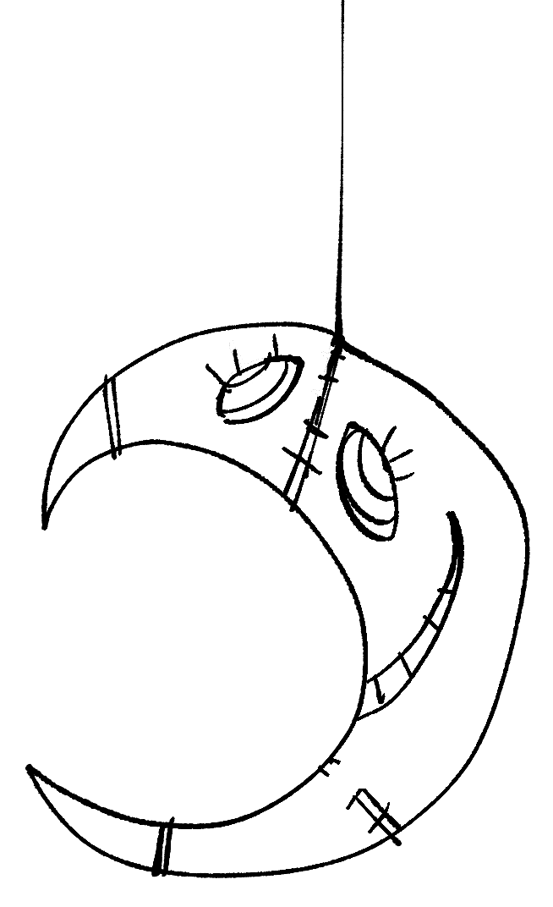
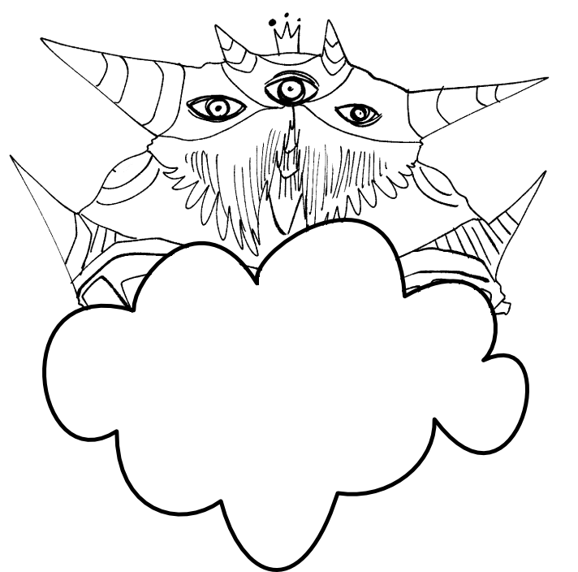
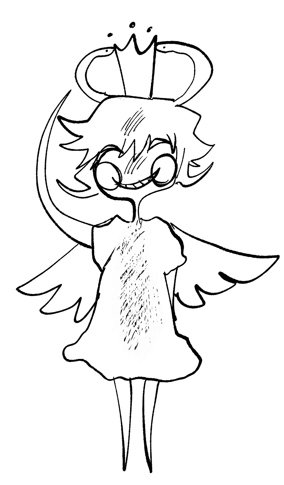
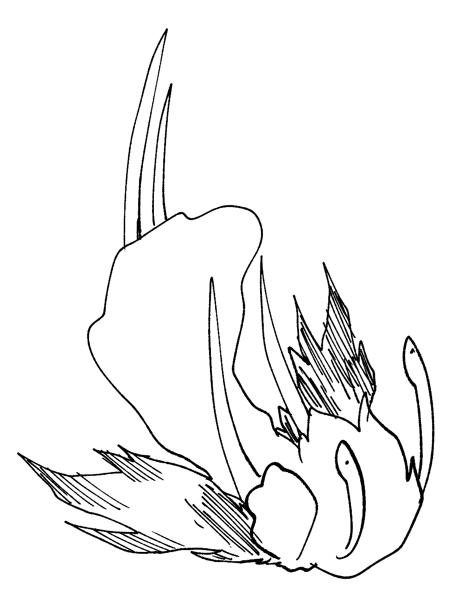
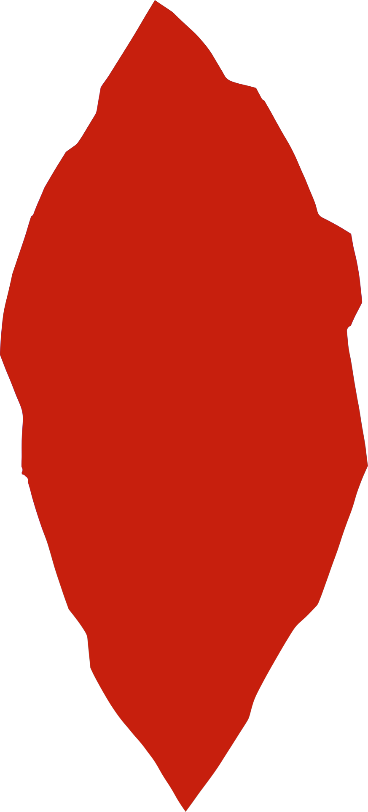
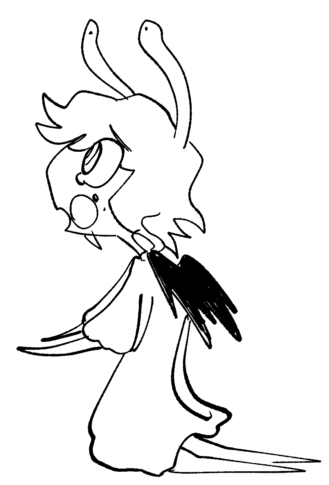

- DRAW SVG et ScrollTrigger
- Opacité From 0
- L'étoile n'a pas de scrub, et fonctionne avec Toggle Actions.
Chapitre 1
Le divin a créé son royaume céleste et ses sujets: les anges.

- scrollTrigger
- Opacité From 0 To 100
- Scale From 0 To 100
Chapitre 2
L'un des sujets se nomme Lucifer. Ce dernier explosa de joie et commença à danser.
- SCROLLTRIGGER
- ANIMATION LOOP
- ScaleX From 100% To -100%
- ScaleX From -75% To 75%
- Yoyo Activé
- Aucun Ease
- Transform Origin center 0.9
- Avec SpriteSheet
- Avec Pin
Chapitre 3
La dance devient de plus en plus frénétique, presque folle.
- SCROLLTRIGGER
- ANIMATION LOOP
- ScaleY From 100% To 95%
- Yoyo Activé
- Aucun Ease
- Transform Origin right 100%
- Durée de 0.05 secondes
Chapitre 4
C'est dans cette folie que Lucifer vola la couronne du divin
et se proclama dirigeant du royaume
céleste.

- SCROLLTRIGGER
- Opacité From 0 To 100
- Dépalcement Y From -100% To 0
- Avec SpriteSheet
- Avec Pin
Chapitre 5
Le divin ne laissa passer cet affront et banissa Lucifer dans les pronfondeurs du royaume.
- PARALLAXE
- SCROLLTRIGGER
- Opacité From 0 To 100
- Dépalcement Y From -100% To 0
- ANIMATION LOOP
- Déplacement Y From 0% To 5%
- Yoyo Activé
- Aucun Ease
- Transform Origin right 100%
Chapitre 6
Lucifer tomba dans un gouffre qui semblait infini...


- SCROLLTRIGGER
- ANIMATION LOOP
- Rotate From 5 To -5
- Yoyo Activé
- Aucun Ease
- Transform Origin right 100%
- ANIMATION UNIQUE
- Déplacement X From 10% To -50%
- Durée de 3 secondes
Chapitre 7
Au fond du gouffre, il supplia le divin de le pardonner.
Il n'aura aucune réponse
de ce dernier pendant ce qui semblera être une éternité.

- SCROLLTRIGGER
- MOTION PATH
- Le path est en forme de cercle.
- Il fait le trajet de 1 à 0.25
FIN!